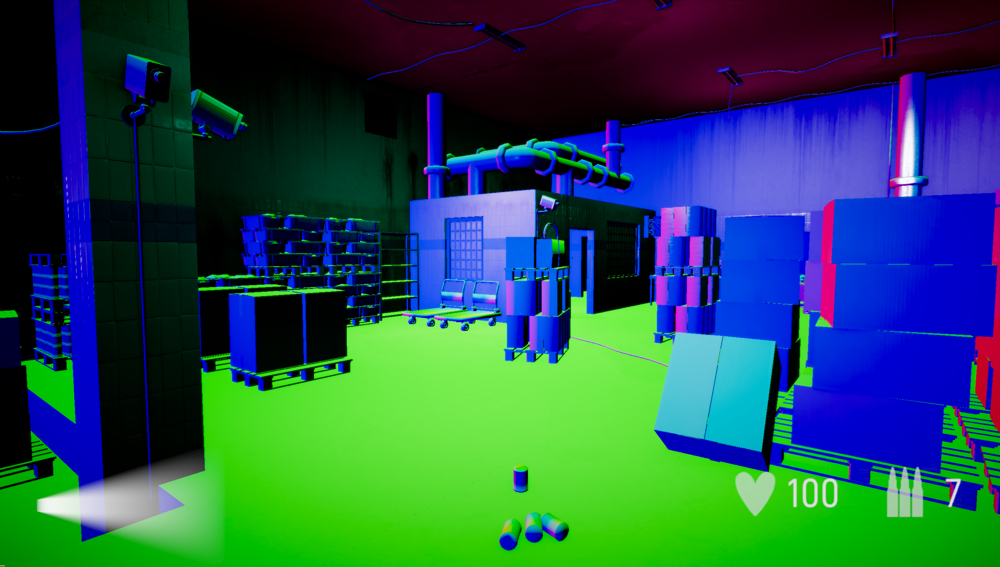
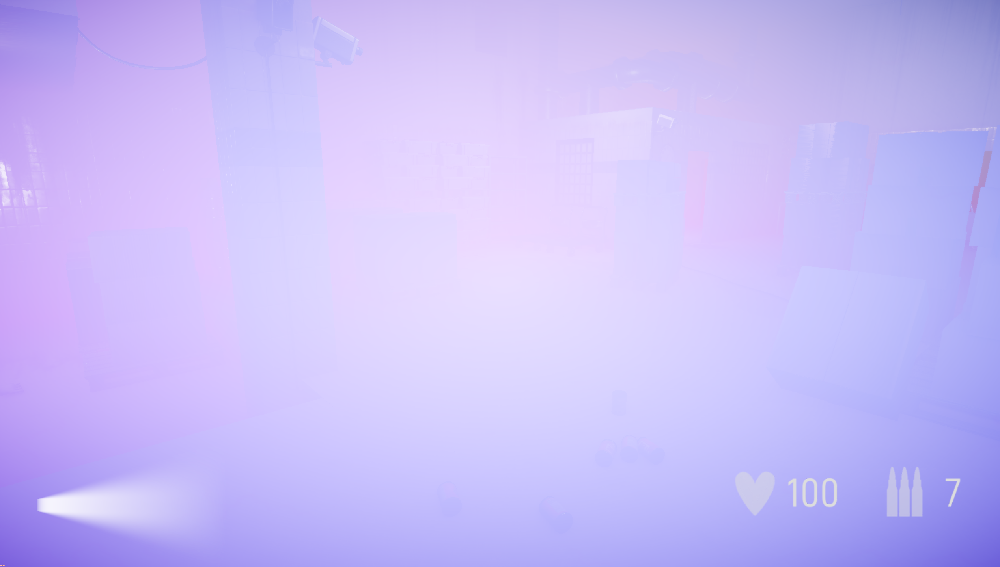

The asset brush is a tool I made during our tools course at The Game Assembly. We had just completed our top down adventure project and I identified a huge time sink for our artists when set dressing the levels. They had to place each individual foliage asset by hand, meaning duplicating each asset, rotate/scale to their liking, and then placing it. I wanted to make a tool that made this job fast, easy to learn and fun to use. This way, we could save loads of time in our future projects.
I will refer to a "brush stroke" and a "batch" in my descriptions. They are essentially the same thing, meaning one single placement of a group of assets.
Both draw and erase mode let the user choose between hold-and-drag or single click, giving fine-grained control over how assets are placed. Asset selection can be either random or sequential, with random selecting a random asset from the ones in the palette, and sequential placing them in the order they were added to the palette. The draw mode also supports preview and none preview mode, with preview mode showing green ghost assets representing the position and orientation the asset will be placed as. For more control, the user can select the option to freeze each brush stroke, effectively letting them move around the current batch of assets to place wherever they like, and then only generate a new batch if the user presses 'R'.
Spacing is handled in two ways. The user can control the distance between each brush stroke, so each batch is placed at a set interval from the previous one. On top of that, minimum spacing between individual objects can be enabled, either against all previously painted objects, or just within the current batch. One known issue with the current implementation is that the assets currently only check their absolute position against each other, which can make them overlap during certain circumstances — a problem that could be solved by instead checking their max bounds and computing the minimum distance that way. But for now, absolute position is more than enough for almost every case.
The user can also decide to scatter the positions relative to the brush size, meaning they can spread the assets around the edges of the brush, or concentrate the placement to the inner 20%, or in whatever combination they wish, all configurable under the "Position Scatter" option.
As a first iteration I only allowed placement of one unique asset — this quickly became underwhelming. Multi asset drawing gives the user unlimited choices in how to design their clusters. With randomization per asset, spacing and the ability to tune how many assets to place, each brush stroke can generate something unique. Users do so by adding slots to an “Asset Palette”, a representation of which assets they are currently using in their brush stroke. This supports a large amount of assets, and for the time being, I set the maximum assets per stroke to 20.
As for now, a limitation to the system is if the brush size in combination with spacing makes the placement of a single asset within a batch fail because of the settings. I did implement a “Try Place” function, which tries placing the asset a maximum of 10 times before silently failing the placement, as you can see in the code snippet under “Spacing & Draw Mode”.
Randomization gives the user a tool for creating unique assets in each batch. I've chosen to divide it into yaw/pitch/roll and scale, to give the user an easy overview of what is available. I noticed that with the inclusion of previews and the ability to turn off auto generate (the freeze function described earlier), this became even more useful. The user can now generate a new randomized batch if they feel like the brush stroke is in a position they like. One thing I really would like to add is the ability to only regenerate the randomness of the current batch assets, without also switching out the current batch assets. But for now, this is more than enough, giving a lot of options.
I noticed this was also very useful for more detailed work, such as single asset placement, when working in a concentrated area. The user also has the ability to change yaw/pitch/roll and scale of the current batch manually, by certain key commands such as shift+scroll, x+scroll etc, for even more fine tuning.
Slope filtering works by sampling the normals in the terrain map, giving the user the ability to only target specific elevations in the terrain, without worrying about being careful around edges such as walls or steep cliffs. This also works the other way around, if the user only wants to work on cliff walls or paint along a cliff wall for example. An easy implementation but one that made a huge impact on the end result!
I encountered several performance issues during the development of the tool. As a first iteration, I kept iterating over all previously placed assets by the brush when doing checks for object spacing, an O(n) operation, meaning every new placement had to check against every single previously placed object, growing slower the more objects existed. I noticed this quickly became a blocker which introduced the need to handle scaleable performance. A first solution was to create a spatial grid based on the minimum spacing allowed between objects, with the current object checking a 3D grid around itself for other objects placed. This effectively removed several unnecessary iterations during the check.
Even with this improvement, performance was still an issue. After profiling, I found that the biggest bottleneck was our naming system in the editor, which iterated over all instances of the same asset to generate a unique name when adding an asset to the scene. After adding a simple counter system which names assets uniquely based on whether they are painted by the brush or not, and checking how many instances of one asset exist during startup, I effectively eliminated the lag that was previously caused.


Since we already had GBuffer textures in place, I decided to use those as a source for generating the textures I needed for the picking. Two staging textures were used for this, one containing the vertex normals and one containing the world position of the currently drawn scene. I created a component tag that could be added to any scene object, used to mark it as paintable terrain. Only objects carrying this tag were drawn to the staging textures, meaning the brush would only snap to intentionally marked surfaces. In the render pipeline, I then drew the terrain objects first. After these were drawn, we could fetch the textures.
The world position is drawn to a texture using the format DXGI_FORMAT_R32G32B32A32_FLOAT. Since the data is stored as 4 values of 32 bits and we use floats as a representation of our world position, reading the world position back is straightforward.
The normals however needed converting back to a -1 to 1 range, since when drawing to the GBuffer texture, we remap to 0-1 because the shader can't store negative values in a texture. The normals are saved to a texture with the format DXGI_FORMAT_R10G10B10A2_UNORM, using 10 bits for each channel. On readback, the 10-bit channels are unpacked and the encoding is reversed back to -1 to 1.
Preview mode came with a lot of challenges. We now needed to save a version of the object that could be updated manually by the user if they wished to do so. For my first iteration, I did not need to care since the assets got updated between each brush stroke in regards to the settings chosen by the user. Now, we needed to keep the position/rotation/scale for the object, or some combination of them, based on the settings.
For this, I created a struct related to the already existing scene object. By caching the current previews of the current stroke and batch of that stroke, I was able to update it cleanly as the user dragged the mouse across the screen. This also introduced the "Update on move" and "Manual update on R" settings, since the need for more control arose as a product of the preview tool.
struct PreviewObject
{
std::shared_ptr<Tga::SceneObject> sceneObject;
bool isValid;
Tga::Vector2f cachedOffsetTangent;
Tga::Quaternionf cachedRotation;
Tga::Vector3f currentTerrainNormal;
Tga::Vector3f cachedScale;
Tga::StringId assetPath;
float pivotOffset = 0.f;
};An interesting geometric problem arose from the fact that the brush uses a flat 2D disc as a representation of the area the assets can be placed in. Since the brush originally scattered objects in the XZ plane, it completely broke when trying to scatter on vertical or very steep surfaces, placing the objects in a line rather than spreading them out. This was solved by finding the tangent and bitangent of the surface normal and using those as the up/down and left/right directions for the position offset.
One problem that still persists is that the scatter area is in screen space, occasionally placing objects far away if the disc is outside the intended area but where valid terrain still exists. This can be solved by doing a simple world position check as well, so that the asset is not too far from the world position of the brush center — a feature I am looking to add.
void AssetBrush::GetSurfaceTangentFrame(
const Tga::Vector3f& normal,
Tga::Vector3f& outTangent,
Tga::Vector3f& outBitangent)
{
// Pick a reference vector that isn't parallel to the normal
Tga::Vector3f reference = (fabsf(normal.y) < 0.99f)
? Tga::Vector3f(0, 1, 0)
: Tga::Vector3f(1, 0, 0);
outTangent = reference.Cross(normal);
outTangent.Normalize();
outBitangent = normal.Cross(outTangent);
outBitangent.Normalize();
}Another problem that arose was the pivot of the object not always aligning with the actual surface we are placing our asset on. Some of our assets had their pivot in the center which made the object clip through the surface rather than sitting on top of it. This was solved by subtracting the difference between the object's Y boundary and the object's center if a difference was found. I made this feature a toggle as well, so that the artist was able to control the pivot offset themselves.
One problem I encountered was that the undo action was a bit inconsistent. Every user expects a clean and functional undo action, which is easy to deprioritize during development since focus lies elsewhere. At first, the undo action in our editor meant undoing the previous command. When placing many assets this became tedious since one undo meant removing only one asset. I fixed this to undo by batch and brush stroke instead, by adding all assets painted in that stroke into one single command.